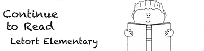

Mathew Lopez Print Project |
||
| Home Print Project Digital Photography Video Project Infographic Project | ||
|

Bookmark made during my AENG 110 Print Project. |
During my AENG 110 class we had to make many different projects, one of them being a printed bookmark. The printed bookmark I made was meant to tell kids who go to Letort Elementary school that reading is something that is fun. Overall, this project was a basic project that I enjoyed doing because not only did we get to create a bookmark, but we also got to encourage kids to read more by giving our work to them. |
Home Print Project Digital Photography Video Project Infographic Project |
©2024 Mathew Lopez | ||